Geometría vectorial del plano y el espacio reales
Análisis Matemático
Escalares
Definición 1 (Escalar) Un escalar es un número que sirve para expresar una magnitud sin dirección.
Ejemplo 1 La estatura o el peso de una persona, el volumen de un depósito, la temperatura de un gas, el trabajo realizado por una fuerza sobre un objeto, la carga eléctrica o el tiempo que tarda un móvil en recorrer una distancia, son escalares.
Vectores
Definición 2 (Vector) Un vector es un objeto geométrico que tiene asociada una magnitud o longitud y una dirección. El vector con longitud 0 se conoce como vector nulo, se representa \(\mathbf{O}\) y es el único vector que no tiene dirección.
Ejemplo 2 La velocidad y la aceleración de un móvil o la fuerza que se aplica sobre un objeto, son vectores.
Geométricamente, en un espacio euclídeo, un vector se representa mediante un segmento orientado, es decir, una flecha.
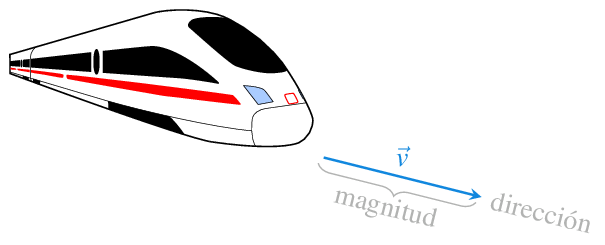
Representación de un vector
Un segmento orientado puede ubicarse en diferentes lugares dentro de un espacio euclídeo. Sin embargo, con independencia de donde esté situado, si la longitud y la dirección no varían, dicho segmento representará siempre el mismo vector.
Esto permite representar todos los vectores con un mismo origen, el origen en sistema de coordenadas cartesianas. Así, en cualquier espacio euclídeo, un vector queda determinado por las coordenadas del punto que determina su extremo final.
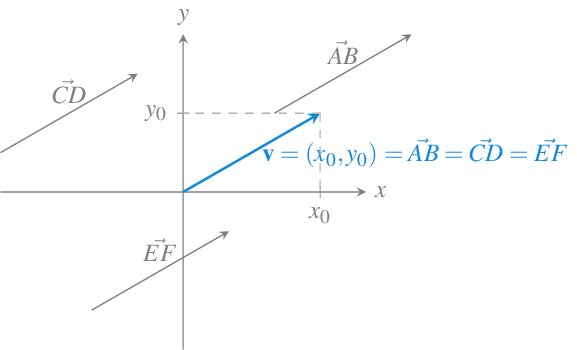
Vector a partir de dos puntos
Dados dos puntos \(P\) y \(Q\) de un espacio euclídeo, el vector con origen en \(P\) y final en \(Q\) tiene coordenadas \(\vec{PQ}=Q-P\).
Ejemplo 3 Sean los puntos \(P=(1,1)\) y \(Q=(3,4)\) del plano real \(\mathbb{R}^2\), entonces
\[\vec{PQ} = Q-P = (3,4)-(1,1) = (3-1,4-1) = (2,3).\]
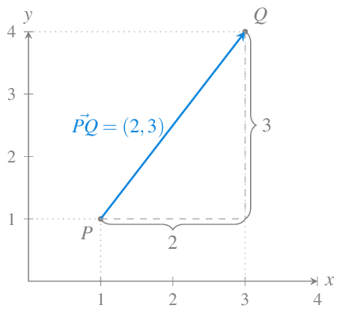
Módulo de un vector
Definición 3 (Módulo de un vector) Dado un vector \(\mathbf{v}=(v_1,\cdots,v_n)\) en \(\mathbb{R}^n\), se define el módulo de \(\mathbf{v}\) como
\[ \lvert \mathbf{v} \rvert = \sqrt{v_1^2+ \cdots + v_n^2}. \]
Proposición 1 El módulo de un vector coincide con la longitud del segmento que representa el vector.
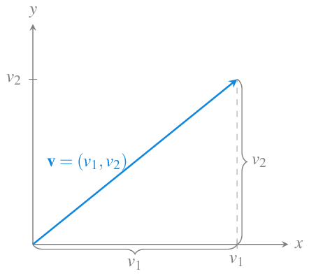
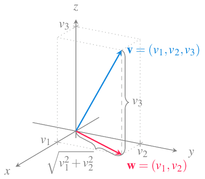
Ejemplo 4 Sea \(\mathbf{u}=(3,4)\) un vector en \(\mathbb{R}^2\), entonces
\[ \lvert \mathbf{u} \rvert = \sqrt{3^2+4^2} = \sqrt{25} = 5. \]
Sea \(\lvert \mathbf{v}\rvert =(4,7,4)\) un vector en \(\mathbb{R}^3\), entonces
\[ \lvert \mathbf{v} \vert = \sqrt{4^2+7^2+4^2} = \sqrt{81} = 9. \]
Vectores unitarios
Definición 4 (Vector unitario) Se dice que un vector \(\mathbf{v}\) en \(\mathbb{R}^n\) es unitario si su módulo es 1, es decir \(\lvert \mathbf{v}\rvert=1\).
Especial atención merecen los vectores unitarios que siguen la dirección de los ejes de coordenadas, estos vectores se llaman vectores coordenados.
En \(\mathbb{R}^2\) los vectores coordenados son
\[\mathbf{i}=(1,0)\mbox{ y }\mathbf{j}=(0,1)\]
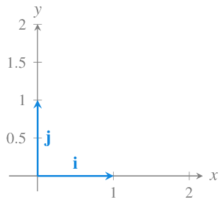
En \(\mathbb{R}^3\) los vectores coordenados son
\[\mathbf{i}=(1,0,0)\mbox{, }\mathbf{j}=(0,1,0) \mbox{ y } \mathbf{k}=(0,0,1)\]
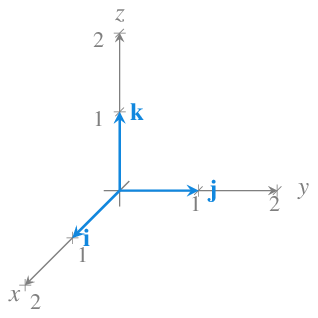
Suma de vectores
Definición 5 (Suma de vectores) Dados dos vectores \(\mathbf{u}=(u_1,\cdots,u_n)\) y \(\mathbf{v}=(v_1,\cdots,v_n)\) en \(\mathbb{R}^n\), se define la suma de \(\mathbf{u}\) y \(\mathbf{v}\) como
\[ \mathbf{u}+\mathbf{v} = (u_1+v_1,\ldots, u_n+v_n). \]
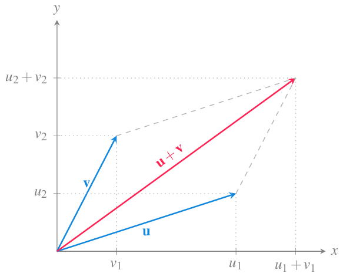
Ejemplo 5 Sean \(\mathbf{u}=(3,1)\) y \(\mathbf{v}=(2,3)\) dos vectores en \(\mathbb{R}^2\), entonces
\[ \mathbf{u}+\mathbf{v} = (3+2,1+3) = (5,4). \]
Producto de un vector por un escalar
Definición 6 (Producto de un vector por un escalar) Dado un vector \(\mathbf{v}=(v_1,\cdots,v_n)\) en \(\mathbb{R}^n\), y un escalar \(a\in \mathbb{R}\), se define el producto de \(a\) por \(\mathbf{v}\) como
\[ a\mathbf{v} = (av_1,\ldots, av_n). \]
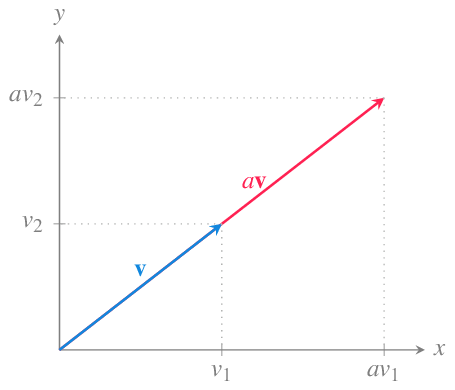
Ejemplo 6 Sean el vector \(\mathbf{v}=(2,1)\) en \(\mathbb{R}^2\) y el escalar \(a=2\), entonces
\[ a\mathbf{v} = 2(2,1) = (4,2). \]
Expresión de un vector como combinación lineal de los vectores coordenados
La suma de vectores y el producto de un vector por un escalar permite expresar cualquier vector como una combinación lineal de los vectores coordenados.
En el caso del espacio real \(\mathbb{R}^3\), cualquier vector \(\mathbf{v}=(v_1,v_2,v_3)\) puede expresarse como
\[\mathbf{v}=(v_1,v_2,v_3) = v_1\mathbf{i}+v_2\mathbf{j}+v_3\mathbf{k}.\]
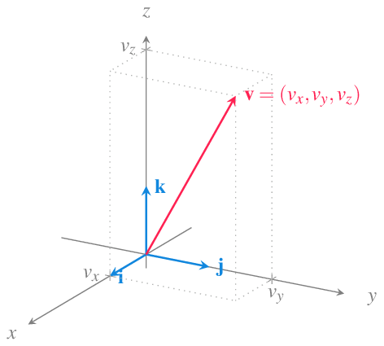
Producto escalar
Existen diferentes formas de multiplicar dos vectores, una de ellas es el producto escalar que tiene aplicaciones muy interesantes.
Definición 7 (Producto escalar) Dados dos vectores \(\mathbf{u}=(u_1,\cdots,u_n)\) y \(\mathbf{v}=(v_1,\cdots,v_n)\) en \(\mathbb{R}^n\), se define el producto escalar de \(\mathbf{u}\) y \(\mathbf{v}\) como
\[ \mathbf{u}\cdot \mathbf{v} = u_1v_1 + \cdots + u_nv_n. \]
El resultado del producto escalar de dos vectores no es un vector, sino un escalar.
Ejemplo 7 Sean \(\mathbf{u}=(3,1)\) y \(\mathbf{v}=(2,3)\) dos vectores en \(\mathbb{R}^2\), entonces
\[ \mathbf{u}\cdot\mathbf{v} = 3\cdot 2 +1\cdot 3 = 9. \]
Proposición 2 (Propiedades del producto escalar) Dados los vectores \(\mathbf{u}\), \(\mathbf{v}\) y \(\mathbf{w}\) en \(\mathbb{R}^n\), se cumple que
- \(\mathbf{v}\cdot\mathbf{v} = |\mathbf{v}|^2\).
- \(\mathbf{u}\cdot\mathbf{v} = \mathbf{v}\cdot\mathbf{u}\).
- \(\mathbf{u}\cdot(\mathbf{v}+\mathbf{w}) = \mathbf{u}\cdot\mathbf{v} + \mathbf{u}\cdot\mathbf{w}\).
- \((a\mathbf{u})\cdot\mathbf{v} = a(\mathbf{u}\cdot\mathbf{v})\) \(\forall a\in\mathbb{R}\).
- \(\mathbf{0} \cdot \mathbf{v} = 0\).
Teorema 1 (Producto escalar) Si \(\mathbf{u}\) y \(\mathbf{v}\) son dos vectores no nulos en \(\mathbb{R}^n\), entonces
\[ \mathbf{u}\cdot\mathbf{v} = \lvert \mathbf{u}\rvert \lvert\mathbf{v}\rvert \cos(\alpha) \]
donde \(\alpha\) es el ángulo que forman los vectores.
Este teorema permite calcular fácilmente el ángulo entre dos vectores a partir de su producto escalar.
Corolario 1 Si \(\alpha\) es el ángulo entre dos vectores no nulos \(\mathbf{u}\) y \(\mathbf{v}\) en \(\mathbb{R}^n\), entonces
\[ \alpha = \operatorname{arccos}\left(\frac{\mathbf{u}\cdot \mathbf{v}}{|\mathbf{u}||\mathbf{v}|}\right). \]
Ejemplo 8 El ángulo entre los vectores \(\mathbf{u}=(1,0,2)\) y \(\mathbf{v}=(-2,1,-3)\) es
\[\begin{align*} \alpha &= \operatorname{arccos}\left(\frac{\mathbf{u}\cdot \mathbf{v}}{|\mathbf{u}||\mathbf{v}|}\right) \\ &= \operatorname{arccos}\left(\frac{1\cdot(-2)+0\cdot 1+2\cdot (-3)}{\sqrt{1^2+0^2+2^2}\sqrt{(-2)^2+1^2+(-3)^2}}\right)\\ & = \operatorname{arccos}\left(\frac{-8}{\sqrt{5}\sqrt{14}} \right) \approx 2.84 \mbox{ rad}. \end{align*}\]
Una interesante aplicación geométrica del producto escalar permite calcular la proyección de un vector sobre otro.
Proposición 3 Si \(\mathbf{u}\) y \(\mathbf{v}\) son dos no nulos vectores en \(\mathbb{R}^n\), entonces la longitud de la proyección de \(\mathbf{v}\) sobre \(\mathbf{u}\) es
\[ \frac{\mathbf{u}\cdot \mathbf{v}}{|\mathbf{u}|}. \]
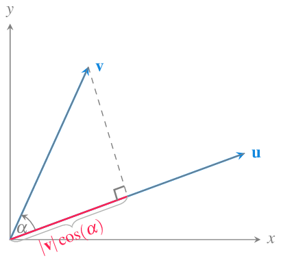
Vectores paralelos
Definición 8 (Vectores paralelos) Dos vectores \(\mathbf{u}\) y \(\mathbf{v}\) en \(\mathbb{R}^n\) son paralelos si existe un escalar \(a\in\mathbb{R}\) no nulo tal que
\[ \mathbf{u} = a\mathbf{v}. \]
Ejemplo 9 Los vectores \(\mathbf{u}=(-4,2)\) y \(\mathbf{v}=(2,-1)\) en \(\mathbb{R}^2\) son paralelos, ya que
\[ \mathbf{u}= (-4,2) = -2(2,-1) = -2\mathbf{v}. \]
Vectores ortogonales y ortonormales
Definición 9 (Vectores ortogonales y ortonormales) Dos vectores \(\mathbf{u}\) y \(\mathbf{v}\) en \(\mathbb{R}^n\) son ortogonales forman un ángulo de de \(90^\circ\), es decir, si son perpendiculares.
Si además el módulo de ambos vectores es la unidad \(\lvert\mathbf{u}\rvert=\lvert\mathbf{v}\rvert=1\), entonces se dice que son ortonormales.
Teorema 2 Dos vectores no nulos \(\mathbf{u}\) y \(\mathbf{v}\) en \(\mathbb{R}^n\) son ortogonales si y sólo si \(\mathbf{u}\cdot \mathbf{v}=0\).
Ejemplo 10 Los vectores \(\mathbf{u}=(2,1)\) y \(\mathbf{v}=(-2,4)\) en \(\mathbb{R}^2\) son ortogonales, ya que
\[ \mathbf{u}\mathbf{v} = 2\cdot -2 +1\cdot 4 = 0, \]
pero no son ortonormales ya que \(\lvert\mathbf{u}\rvert = \sqrt{2^2+1^2} \neq 1\) y \(\lvert \mathbf{v}\rvert = \sqrt{-2^2+4^2} \neq 1\).
Los vectores \(\mathbf{i}=(1,0)\) y \(\mathbf{j}=(0,1)\) en \(\mathbb{R}^2\) son ortonormales, ya que
\[ \mathbf{i}\mathbf{j} = 1\cdot 0 +0\cdot 1 = 0, \quad \lvert\mathbf{i}\rvert = \sqrt{1^2+0^2} = 1, \quad \lvert \mathbf j\rvert = \sqrt{0^2+1^2} = 1. \]
Producto vectorial
Definición 10 (Producto vectorial) Dados dos vectores \(\mathbf{u}=(u_1,u_2,u_3)\) y \(\mathbf{v}=(v_1,v_2,v_3)\) en \(\mathbb{R}^3\), se define el producto vectorial de \(\mathbf{u}\) y \(\mathbf{v}\) como el vector
\[ \mathbf{u}\times \mathbf{v} = (u_2v_3-u_3v_2, u_3v_1-u_1v_3, u_1v_2-u_2v_1) \]
El producto vectorial también puede expresarse de las siguiente manera utilizando determinantes de matrices 2x2.
\[ \mathbf{u}\times \mathbf{v} = \left| \begin{array}{cc} u_2 & u_3 \\ v_2 & v_3 \end{array} \right|\mathbf{i} - \left| \begin{array}{cc} u_1 & u_3 \\ v_1 & v_3 \end{array} \right|\mathbf{j} + \left| \begin{array}{cc} u_1 & u_2 \\ v_1 & v_2 \end{array} \right|\mathbf{k}. \]
O, abusando un poco de la notación como
\[ \mathbf{u}\times \mathbf{v} = \left| \begin{array}{ccc} \mathbf{i} & \mathbf{j} & \mathbf{k}\\ u_1 & u_2 & u_3\\ v_1 & v_2 & v_3\\ \end{array} \right| \]
El producto vectorial de dos vectores solo tiene sentido en \(\mathbb{R}^3\).
Ejemplo 11 El producto vectorial de los vectores \(\mathbf{u}=(1,2,0)\) y \(\mathbf{v}=(-1,1,0)\) es
\[ \mathbf{u}\times \mathbf{v} = (2\cdot 0-0\cdot 1, 1\cdot 0 - 0\cdot (-1), 1\cdot 1-2\cdot (-1) = (0, 0, 3). \]
Como se puede observar en el siguiente gráfico, el vector resultante es perpendicular a \(\mathbf{u}\) \(\mathbf{v}\), algo que se debe al siguiente resultado.
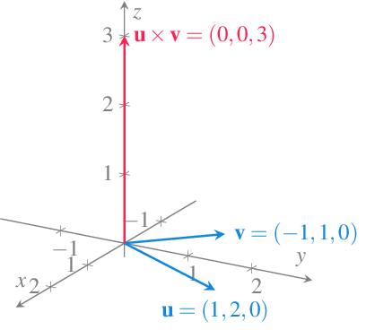
Proposición 4 Si \(\mathbf{u}\) y \(\mathbf{v}\) son dos vectores no nulos ni paralelos en el espacio real \(\mathbb{R}^3\), el vector \(\mathbf{u}\times \mathbf{v}\) es ortogonal a ellos.
Teorema 3 Si \(\mathbf{u}\) y \(\mathbf{v}\) son dos vectores no nulos en el espacio real \(\mathbb{R}^3\), entonces
\[ |\mathbf{u}\times\mathbf{v}| = \lvert \mathbf{u}\rvert \lvert\mathbf{v}\rvert \operatorname{sen}(\alpha) \]
donde \(\alpha\) es el ángulo que forman los vectores.
Corolario 2 Dos vectores no nulos \(\mathbf{u}\) y \(\mathbf{v}\) en \(\mathbb{R}^3\) son paralelos si y sólo si \(\mathbf{u}\times \mathbf{v}=\mathbf{0}\).
Proposición 5 Si \(\mathbf{u}\) y \(\mathbf{v}\) son dos vectores no nulos en el espacio real \(\mathbb{R}^3\), entonces \(|\mathbf{u}\times \mathbf{v}|\) es el área del paralelogramo definido por \(\mathbf{u}\) y \(\mathbf{v}\).
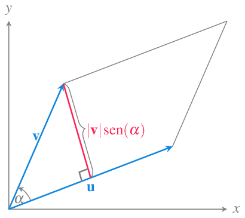
Proposición 6 Dados los vectores \(\mathbf{u}\), \(\mathbf{v}\) y \(\mathbf{w}\) en \(\mathbb{R}^n\), se cumple que
- \(\mathbf{u}\times \mathbf{v} = -\mathbf{v}\times\mathbf{u}\).
- \((a\mathbf{u})\times\mathbf{v} = a(\mathbf{u}\times\mathbf{v})\) \(\forall a\in\mathbb{R}\).
- \(\mathbf{u}\times(\mathbf{v}+\mathbf{w}) = \mathbf{u}\times\mathbf{v} + \mathbf{u}\times\mathbf{w}\).
- \(\mathbf{u}\cdot(\mathbf{v}\times \mathbf{w}) = (\mathbf{u}\times \mathbf{v})\cdot \mathbf{w}\).
- \(\mathbf{u}\times (\mathbf{v}\times \mathbf{w}) = (\mathbf{u}\cdot \mathbf{w})\mathbf{v}-(\mathbf{u}\cdot\mathbf{v})\mathbf{w}\).
Ecuación vectorial de la recta
Definición 11 (Ecuación vectorial de la recta) Sea \(l\) una recta en el espacio \(\mathbb{R}^n\) y sean \(P=(p_1,\ldots,p_n)\) un punto cualquiera de la recta y \(\mathbf{v}=(v_1,\ldots,v_n)\) un vector cualquiera con la misma dirección que la recta. La ecuación
\[ l: X = P + t\mathbf{v} = (p_1,\ldots,p_n)+t(v_1,\ldots,v_n) = (p_1+tv_1,\ldots,p_n+tv_n), \]
parametriza a \(l\) en función de \(t\in \mathbb{R}\), y se conoce como ecuación vectorial de la recta.
Ejemplo 12 Considérese la recta del espacio real \(\mathbb{R}^3\) que aparece en la siguiente gráfica.
Un punto de la recta es \(P=(1,1,2)\) y un vector director es \(\mathbf{v}=(-1,2,2)\), luego su ecuación vectorial es
\[ l: X= P + t\mathbf{v} = (1,1,2)+t(-1,2,1)=(1-t,1+2t,2+t)\quad t\in\mathbb{R}. \]
Ecuaciones paramétricas y cartesianas de la recta
De la ecuación vectorial de una recta \(l: X=P + t\mathbf{v}=(p_1+tv_1,\ldots,p_n+tv_n)\) se obtienen fácilmente las coordenadas de los puntos que forman parte de la recta mediante \(n\) ecuaciones paramétricas:
\[ x_1(t)=p_1+tv_1, \ldots, x_n(t)=p_n+tv_n \]
donde, si \(\mathbf{v}\) es un vector cuyas coordenadas son no nulas (\(v_i\neq 0\) \(\forall i\)), se puede despejar el parámetro \(t\) en cada una de ellas e igualarlas,
\[ \frac{x_1-p_1}{v_1} = \cdots = \frac{x_n-p_n}{v_n} \]
Ejemplo 13 Dada la ecuación vectorial de la recta \(l: X=(1,1,2)+t(-1,2,1) =(1-t,1+2t,2+t)\) en el espacio real \(\mathbb{R^3}\), sus ecuaciones paramétricas son
\[ x(t) = 1-t, \quad y(t)=1+2t, \quad z(t)=2+t, \]
y sus ecuaciones cartesianas son
\[ \frac{x-1}{-1}=\frac{y-1}{2}=\frac{z-2}{1} \]
Ecuación punto-pendiente de una recta en el plano
En el caso particular del plano real \(\mathbb{R^2}\), si se tiene una recta con ecuación vectorial
\[ l: X=P+t\mathbf{v}=(x_0,y_0)+t(a,b) = (x_0+ta,y_0+tb), \]
sus ecuaciones paramétricas son
\[ x(t)=x_0+ta,\quad y(t)=y_0+tb \]
y sus ecuación cartesiana es
\[ \frac{x-x_0}{a} = \frac{y-y_0}{b}. \]
A partir de aquí, pasando \(b\) multiplicando al otro lado de la ecuación, se obtiene
\[ y-y_0 = \frac{b}{a}(x-x_0) \mbox{ o bien } y-y_0=m(x-x_0), \]
llamando \(m=b/a\).
Esta ecuación se conoce como ecuación en la forma punto-pendiente.
Pendiente de una recta en el plano real
Definición 12 (Pendiente de una recta) Dada una recta \(l: X=P+t\mathbf{v}\) en el plano real \(\mathbb{R}^2\), con vector director \(\mathbf{v}=(a,b)\), se define la pendiente de \(l\) como \(b/a\).
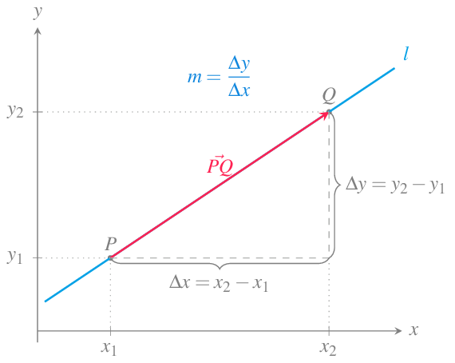
Ecuación vectorial del plano en el espacio real
Definición 13 (Ecuación vectorial de un plano en el espacio) Dado un punto \(P=(x_0,y_0,z_0)\) y un vector \(\mathbf{v}=(a,b,c)\) en el espacio real \(\mathbb{R}^3\), la ecuación vectorial del plano que pasa por \(P\) perpendicular a \(\mathbf{v}=(a,b,c)\) es
\[ \vec{PQ}\cdot\mathbf{v} = (x-x_0,y-y_0,z-z_0)(a,b,c) = a(x-x_0)+b(y-y_0)+c(z-z_0) = 0. \]
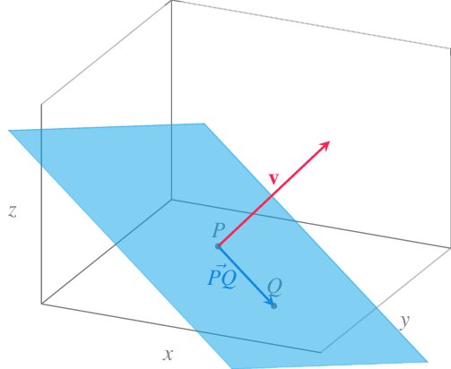
Ecuación escalar de un plano en el espacio
De la ecuación vectorial del plano se obtiene
\[ a(x-x_0)+b(y-y_0)+c(z-z_0) = 0 \Leftrightarrow ax+by+cz=ax_0+by_0+cz_0, \]
que, renombrando \(d=ax_0+by_0+cz_0\), puede reescribirse como
\[ ax+by+cz=d, \]
y se conoce como ecuación escalar del plano.
Ejemplo 14 Dado el punto \(P=(2,1,1)\) y el vector \(\mathbf{v}=(2,1,2)\), la ecuación vectorial del plano qu pasa por \(P\) y es ortogonal a \(\mathbf{v}\) es
\[ (x-2,y-1,z-1)(2,1,2)=2(x-2)+(y-1)+2(z-1)=0, \]
y su ecuación escalar es
\[ 2x+y+2z=7. \]